Игра в стиле oldschool RPG с видом сверху. Вы блуждаете по подземелью, сражаетесь с гоблинами, прокачиваете навыки, собираете трофеи и торгуетесь.
Для начала игры нажмите START A NEW GAME, при желании можно выбрать расу и ввести свой пароль (пароль по-умолчанию ff). После входа в систему вам будет присвоен числовой идентификатор. Если вы хотите продолжить игру тем же персонажем, на стартовой странице введите числовой идентификатор и пароль и нажмите Login.
AWD или стрелки для поворотов и движения вперёд. Персонаж перемещатся только вперёд, в направлении взгляда.
Поднять предмет: t или стрелка вниз.
Предметы 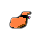, 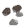, 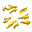 поднимаются, если находятся под персонажем. Инвентарь отображается внизу экрана.
Если предметов под персонажем нет, персонаж будет брать предметы из объектов в двух клеточках перед собой, если это возможно, см. Выплавка металла.
M - Сборка предметов (крафт). Нажмите, чтобы появилось окно сборки предметов. Двойной клик по предмету заставит персонажа делать его, подробнее см. Крафт.
Ниже карты расположено поле ввода и кнопка "say", нажав которую вы произнесете фразу введённую в поле ввода. Фразу услышат все, кто находится поблизости от персонажа.
Esc - выход из игры.
Чтобы экипировать предмет (если это возможно) произведите двойной клик по его изображению в инвентаре. Экипированные вещи в инвентаре выделяются рамкой. Предметы экипировки требуют соответствующую свободную часть тела. Вы не можете взять двуручную кирку, если хотя бы одна рука занята. Сначала разэкипируйте предмет двойным кликом.
Если предметы неэкипируемые, то двойным кликом они используются или помещаются в объекты в двух клеточках перед персонажем, если это возможно. Для примера см. раздел Выплавка металла.
Если вы двигаетесь на персонажа, враждебного к вам, или стоите лицом к атакующему, то ваш персонаж автоматически атакует оппонента (т.е. нет необходимости всё время давить кнопку). Автоматическая атака срабатывает, если враг занимает одну из 4 клеточек перед персонажем, включая диагональные. Важно: если враг стоит "уголком" к вам, т.е. не занимает клеточек непосредственно перед персонажем, то кнопка вперёд (w, стрелочка вверх) приведет к движению, а не к атаке. Если вам удалось нанести урон, вы накапливаете соответствующий опыт, который затем приводит к повышению соответствующего навыка.
Принудительная атака. Можно атаковать и изначально не враждебные к себе цели и даже неживые объекты (например, бочки ) нажав клавишу '1'. Удар приходится в левую клетку над/под персонажем, если персонаж смотрит вверх/вниз или в вехнюю правую/левую клетку, если персонаж смотрим вправо/влево.
Есть два вида гоблинов: 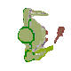и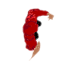. Они враждебны к игрокам и между своими видами.
Умирая, гоблины оставляют скелеты, которые иногда оживают и нападают на всё живое.
Прокачав достаточное количество навыка игроку открываются приёмы (в зависимости от экипированного оружия). Например, при использовании дубин появляется критический удар 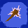, который наносит утроенное повреждение, но требует в 2 раза больше времени. Чтобы воспользоваться приёмом нажмите на его иконку (появляется над инвентарём) во время битвы.
Если вы двигаетесь на персонажа другого игрока (или он на вас) или на NPC торговца 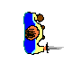, то персонажи поворачиваются друг к другу и инициализируется торговля. Перетяните предметы из своего инвентаря и инвентаря партнёра в соответсвующие поля и нажмите кнопку "Suggest". Если вы торгуете с NPC, то вы сразу получите результат торговли, либо успех, либо отказ. В случае торговли с другим игроком, кнопка "Suggest" отправляет предложение второму игроку, у которого появляется кнопка "Agree". Если он нажмёт её - обмен состоится.
Можно выйти из режима торговли, нажав Esc.
Если у вас экипирована кирка (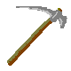) и ваш персонаж упирается в стену (например, 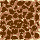,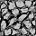), он начинает её рыть. На пол сыпятся камни , которые можно подобрать. Если продолжать рыть продолжительное время, стена исчезнет. Как и в случае атаки, нет необходимости всё время нажимать кнопку. Рытьё будет продолжаться до тех пор, пока стена не исчезнет.
Иногда случаются обвалы, появляются новые стены. Если на этом месте было какое-либо существо, то оно погибает.
Бочки можно двигать, если сходить в клетку с бочкой. При этом ничто не должно мешать бочке сдвинутся, а персонажу занять новое положение. Две бочки за раз свдинуть нельзя.
Бочки можно ломать, см. раздел сражение, принудительная атака.
Костры наносят урон, всем кто окажется в нём. Костёр сгорает сам, но можно поддерживать его горение, добавляя в него деревянные предметы или уголь. Большие деревянные предметы, такие как палки 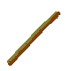 или дубинки 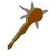 в костре сначала образуют уголь , который потом сгорает.
При рытье стен, вам могут попадаться различные руды, из них можно выплавлять металлы. Для этого встаньте вплотную лицом к печи и двойным кликом по предметам инвентаря помещайте в печь руду и топливо (щепки или уголь). Имейте ввиду, под топливо выделено 4 слота по 5 предметов максимум и под сырьё (руду, металл) столько же. Загружайте топливо в значительном избытке, чем сырьё, а кроме того, для восстановления металов из руды обязательно используйте уголь. Затем кликните два раза на кремень 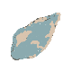, чтобы им воспользоваться и разжечь пламя: 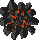.
Когда печь погаснет, можете достать предеты клавишей t или стрелкой вниз. Медная руда 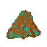 восстанавливается до меди , оловянная 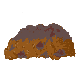 - до олова .
Сплавляя меди и олово 2 к 1 можно получить бронзу.
Нажав кнопку m (make an item), вы увидите окно крафта с изображением предметов. Двойной клик по картинке заставит персонажа производить предмет.
Для производства необходимо наличие ингридиентов. Некоторые ингридиенты - это предметы опредленного вида, а некоторые - материалы и могут быть получены из разных предметов. Например, если требуется материал "камень", то могут быть взяты любые предметы, где есть камень в достаточном количестве. Так кремень тоже состоит из материала камень и если он в инвентаре окажется раньше обычных камней, то может быть исользован в качестве ингридиента. Будьте осторожны, чтобы не потратить не те вещи.
| Ингридиенты | Результат |
| 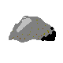+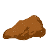 | = 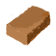 |
| 3 | = 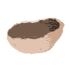 |
| ++ 3 | = 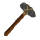 |